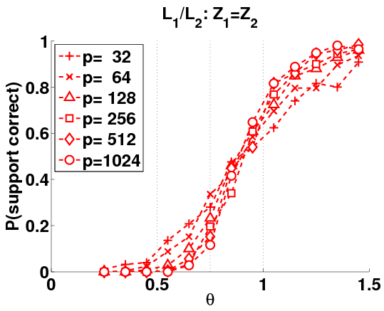
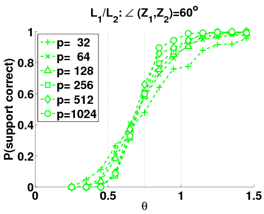
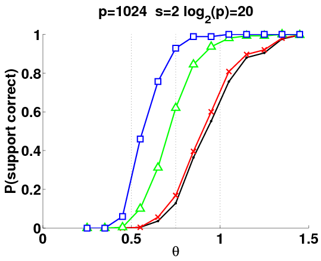

Composite Loss Functions and Multivariate
Regression; Sparse PCA
G. Obozinski, B. Taskar, and M. I. Jordan (2009). Joint covariate selection
and joint subspace selection for multiple classification problems. Statistics and
Computing, to appear.
G. Obozinski, M. J. Wainwright, and M. I. Jordan (2009). Union support
recovery in multivariate regression. Annals of Statistics, under review.
A. Amini and M. J. Wainwright (2009).
High-dimensional analysis of
semidefinite relaxations for sparse PCA. Annals of Statistics, to appear.
1
Introduction
• classical asymptotic theory of statistical inference:
– number of observations n → +∞
– model dimension p stays fixed
• not suitable for many modern applications:
– { images, signals, systems, networks } frequently large (p ≈ 103 − 108)...
– interesting consequences: might have p = Θ(n) or even p ≫ n
• curse of dimensionality:
frequently impossible to obtain consistent
procedures unless p/n → 0
• can be saved by a lower effective dimensionality, due to some form of
complexity constraint
2

Example: Sparse linear regression
y
X
β∗
w
S
n
=
n × p
+
Sc
• vector β∗ ∈ Rp with at most k ≪ p non-zero entries
noisy linear observations y = Xβ∗ + w
• observation model:
X ∈ Rn×p :
design matrix
w ∈ Rn×1 :
noise vector
• various applications (database sketching, imaging, genetic testing...)
3
Example: Graphical model selection
• consider m-dimensional random vector Z = (Z1, . . . , Zm):
X
P(Z1, . . . , Zm; β) ∝ exp
β
.
ijZiZj
(i,j)∈E
• given n independent and identically distributed (i.i.d.) samples of ~
Z, identify
underlying graph G = (V, E)
�
• lower effective dimensionality: graphs with k ≪ p := m edges
2
4

Example: Sparse principal components analysis
0000
1111
00000
11111
0000
1111
00000
11111
0000
1111
00000
11111
0000
1111
00000
11111
=
+
Σ
ZZT
D
Set-up: Covariance matrix Σ = ZZT + D, where leading eigenspace Z
has sparse columns.
Goal: Produce an estimate b
Z based on samples X(i) with covariance matrix
Σ.
5
Some issues in high-dimensional inference
• Consider some fixed loss function, and a fixed level δ of error.
• Given particular (polynomial-time) algorithms
– for what sample sizes n do they succeed/fail to achieve error δ?
– when does more computation reduce minimum # samples needed?
6
Outline
1. Multivariate regression in high dimensions
(a) Practical limitations: scaling laws for second-order cone programs
(b) SOCP vs. Lasso: when does more computation reduce statistical error?
2. Sparse principal component analysis in high dimensions
(a) Thresholding methods
(b) Semidefinite programming
7


Optimization-based estimators in (sparse) regression
y
X
β∗
w
S
n
=
n × p
+
Sc
˘ 1
¯
Regularized QP:
b
β
∈ arg min
ky − Xβk2 + ρ
.
2
n R(β)
β∈Rp
2n
|
{z
}
| {z }
Data term
Regularizer
R(β) = kβk2
Ridge regression
(Tik43, HoeKen70)
R(β) = kβk1
convex ℓ1-constrained QP (CheDonSau96; Tibs96)
R(β) = kβk0
Subset selection: combinatorial, NP-hard (Nat95)
R(β) = kβka, a ∈ (0, 1)
Non-convex ℓa regularization
8
Different loss functions
Given an estimate b
β, how to assess its performance?
1. Predictive loss: compute expected error E[ke
y − X b
βk22]
• goal is to construct model with good predictive power
• β∗ itself of secondary interest (need not be uniquely determined)
2. ℓ2-loss E[k b
β − β∗k22]
• appropriate when B∗ is of primary interest (signal recovery, compressed sensing, denoising
etc.)
3. Support recovery criterion: define estimated support
�
S( b
β) =
i = 1, . . . , p | b
βi 6= 0 ,
and measure probability P[S( b
β) 6= S(β∗)].
• useful for feature selection, dimensionality reduction, model selection
• can be used as a pre-processing step for estimation in ℓ2-norm
9

§1. Multivariate regression in high dimensions
Y
X
B∗
W
S
n
=
n × p
+
n
p
Sc
r
r
r
• signal B∗ is a p × r matrix: partitioned into non-zero rows S and zero rows Sc
• observe n noisy projections, defined via design matrix X ∈ Rn×p and noise matrix
W ∈ Rn×r
• matrix Y ∈ Rn×r of observations
• high-dimensional scaling: allow parameters (n, p, r, |S|) to scale
10


Block regularization and second-order cone programs
(Obozinski, Taskar & Jordan, 2009)
• for fixed parameter q ∈ [1, ∞], estimate B∗ via:
ff
b
1
B
∈ arg min
kY − XBk2
+
ρ
.
F
n ||B||1,q
B∈Rp×r
2n
|
{z
}
| {z }
n
P r
P ˆ
˜
p
2
P
Data term
Yjℓ − (XB)jℓ
k(Bi1, . . . , Bir)kq
j=1 ℓ=1
i=1
• regularization constant ρn > 0 to be chosen by user
q = 1:
elementwise ℓ1 norm (constrained QP)
• different cases:
q = 2:
second-order cone program (SOCP)
q = ∞:
block ℓ1/ℓ∞ max-norm (constrained QP)
• in all cases, efficiently solvable (e.g., by interior point methods)
• generalization of the Lasso (Tibshirani, 1996; Chen et al., 1998),
• special case of the CAP family (Zhao, Rocha, & Yu, 2006); see also (Turlach et al., 2005; Yuan & Lin,
2006, Nardi & Rinaldo, 2008)
11


Two strategies
Goal: Model selection consistency: recover union of supports
S(B∗)
:=
{i ∈ {1, 2, . . . , p} | kB∗ , . . . , B∗
i1
irk2 6= 0}.
Different methods:
• Lasso-based recovery:
1. Solve a separate Lasso (ℓ1-constrained QP) for each column ℓ = 1, . . . , r, yielding
column vector b
βℓ ∈ Rp.
˘
¯
2. Estimate row support b
SLasso = i ∈ {1, 2, . . . , p} | b
βiℓ 6= 0 for some ℓ .
• SOCP-based recovery:
1. Solve a single SOCP, obtaining matrix estimate b
B ∈ p × r.
˘
¯
2. Estimate support b
SSOCP = i ∈ {1, . . . , p} | k( b
Bi1, . . . , b
Birk2 6= 0 .
Trade-offs:
• Lasso (QP) cheap to solve, but method ignores coupling among columns
• SOCP more expensive, but block-regularizer better tailored to matrix structure
12


Scaling law for high-dimensional SOCP recovery
(Obozinski, Wainwright & Jordan, 2009)
˘
¯
• SOCP method: b
B ∈ arg min
1
+ ρ
.
2n kY − X Bk2
F
n||B||1,2
B∈Rp×r
• Parameters: Problem dimension p; number of non-zero rows k
• Design matrix X: i.i.d. rows from sub-Gaussian distribution, with “suitable” covariance Σ
Theorem: If the rescaled sample size
n
θSOCP(n, p, k, B∗) := Ψ(B∗; Σ
S
SS ) log(p − k)
is greater than a critical threshold θℓ(Σ; σ2), then for suitable ρn we have
with probability greater than 1 − 2 exp(c2 log k):
(a) the SOCP has a unique solution b
B s.t. b
S( b
B) ⊆ S(B∗), and
q
(b) It includes all rows i with kB∗
max{k,log(p−k)}.
i k2 ≥ c3
n
13

Assumptions on design covariance
ΣSS
ΣScSc
• support set S = {i | β∗i 6= 0}
Σ
• complement Sc := {1, . . . p}\S.
ScS
ΣSSc
• random design matrix X ∈ Rn×p
• rows drawn i.i.d., cov. Σ, sub-Gaussian
1. Bounded eigenspectrum: λ(ΣSS) ∈ [Cmin, Cmax].
2. Mutual incoherence/irrepresentability: There exists an ν ∈ (0, 1] such that
||ΣScS(ΣSS)−1||∞,∞ ≤ 1 − ν.
P
Example: if ΣSS = I, then require max
|Σji| ≤ 1 − ν.
j∈Sc i∈S
14


Order parameter captures threshold (Angle 0◦)
Prob. success versus rescaled sample size
n
θSOCP(n, p, k, B∗) =
.
Ψ(B∗; Σ
S
SS ) log(p − k)
15


Order parameter captures threshold (Angle 60◦)
Prob. success versus rescaled sample size
n
θSOCP(n, p, k, B∗) =
.
Ψ(B∗; Σ
S
SS ) log(p − k)
16
Sparsity overlap function Ψ
˛
• form gradient matrix Z(B∗) :=
˛
S
∇||BS||1,2˛
∈ Rk×r
BS=B∗S
• equivalent to renormalizing B∗ to have unit ℓ
S
2-norm rows
• form r × r Gram matrix:
G
=
ZT (ΣSS)−1Z
with Ga,b = hhZa, Zbii(ΣSS)−1
• sparsity overlap function is max. eigenvalue of G:
Ψ(B∗; Σ
S
SS )
=
||G||2.
• measures relative alignments of the renormalized columns of B∗
• Special case: Univariate regression (r = 1): Z(β∗) = k for any vector β∗
S
S
17


Concrete examples (k = 4, r = 2)
Aligned columns
Orthogonal columns
B∗
Z(B∗ )
B∗
Z(B∗ )
S
S
2
3
S
S
2
3
2
3
1
1
2
3
1
1
2
2
√
√
√
√
6 2
27
2
2
6 2
2 7
6
7
6 1
√
1
√ 7
6
7
6 1
√
1
√
7
610
107
6
10
10
2
27
6
7
6 2
2 7
4 1
1 5
6 1
1 7
4
5
6 1
7
4√
√
1
−1
√
− 1
√
2
25
4 2
25
7
7
1
√
1
√
7
−7
1
√
− 1
√
2
2
2
2
»
–
»
–
2
2
2
0
G =
||G||
G =
||G||
2
2
2 = 4
0
2
2 = 2
18

Empirical illustration of sparsity-overlap Ψ
• Orthogonal regression: Columns Z1 ⊥ Z2
• Intermediate angle: Columns at 60◦
• Aligned regression: Columns parallel
• Ordinary Lasso: solve problems separately.
19


SOCP versus ordinary QP
Corollary: If ΣSS = Ik×k, SOCP always dominates ordinary QP, with relative
statistical efficiency:
max kℓ log(p − kℓ)
ℓ=1,...r
1 ≤
≤ r
Ψ(B∗; I) log(p
S
− k)
|
{z
}
(QP sample size)/(SOCP sample size)
• increased statistical efficiency of SOCP: dependent on orthogonality properties of rescaled
columns B∗S
• up to a factor 1/r reduction in number of samples required
• most pessimistic case: no gain for disjoint supports, SOCP can be worse in some cases (if
ΣSS 6= I)
20


Proof sketch of sufficient conditions
Direct analysis :
Given n observations of β∗ ∈ Rp with |S(β∗)| = k, oracle decoder performs following two
1. For each subset S of size k, solve the quadratic program:
f (S)
=
min kY − XSβSk2.
2
steps:
βS∈Rk
2. Output the subset b
S = arg min f (S).
|S|=k
• by symmetry of ensemble, may assume that fixed subset S is chosen
• for sets U different from true set S, consider range of non-overlaps t := |U\S| ∈
{1, . . . , k}
`
´ `
´
• number of subsets with non-overlap t given by N(t) =
k
p−k
t−k
t
21


Error exponents for random projections
• union bound yields upper bound on error probability P[error | S true]:
k
X “ k ” “p − k” P[error on subset with non-overlap t]
k − t
t
t=1
ˆ
˜−1
• orthogonal projection Π⊥ := I
XT X
XT
U
n×n − XU
U
U
U
• optimal decoder chooses U incorrectly over S if and only if
‚
“
”‚2
‚
‚2
∆(U )
=
‚
‚
‚
‚
‚Π⊥ X
+ W
W
< 0
U
S\U β∗
S\U
‚ − ‚Π⊥
S
‚
|
{z
}
|
{z
}
effective noise in U ⊥
effective noise in S⊥
• use large deviations to establish that
“
”
P[∆(U) < 0]
≤
exp −n F (kβ∗
.
S\U k2; t)
22


Proof sketch of necessary conditions
• Fano’s inequality applied to a restricted ensemble, assuming fixed choice of β∗:
(β
β∗[U ]
=
min
if i ∈ U
i
0
otherwise.
• by Fano’s inequality, probability of success upper bounded as
I(Y ; β∗)
1 − P[error] ≤
− o(1),
log(M − 1)
where
– I(Y ; β∗): mutual information between β∗ and observation vector Y
` ´
– M = p : number of competing models
k
• some work to establish the upper bound holds w.h.p. for X:
»
–
n
k
I(Y, β∗ | X)
≤
log 1 + (1 − )kβ2
2
p
min
23
§2. High-dimensional analysis of sparse PCA
• principal components analysis (PCA): classical method for dimensionality reduction
• high-dimensional version: eigenvectors from sample covariance b
Σ based on n samples in p
dimensions
• in general, high-dimensional PCA inconsistent unless p/n → 0
(Joh01, JohLu04)
• natural to investigate more structured ensembles for which consistency still possible even
with p/n → +∞:
– sparse eigenvector recovery
(JolEtal03, JohLu04, ZouEtAl06)
– sparse covariance matrices
(LevBic06,ElKar07)
24
Spiked covariance ensembles
• sequences {Σp} of spiked population covariance matrices:
M
X
Σp =
αiβiβT + Γ
i
p,
with leading eigenvectors (βi, i = 1, . . . M).
i=1
• past work on identity spiked ensembles (Γp = Ip)
(Joh01; JohLu04)
• different sparsity models:
– hard sparsity model: β has exactly k non-zero coefficients
– weak ℓq-sparsity: β belongs to the ℓq-“ball”:
˘
p
X
¯
Bq(Rq)
=
z ∈ Rp |
|zi|q ≤ Rq .
i=1
• given n i.i.d. samples {Xi}n
with
i=1
E[Xi] = 0 and cov(Xi) = Σp
25
SDP relaxation of sparse PCA
(D’Aspr´emont, El Ghaoui, Jordan & Lanckriet, 2006)
• Courant-Fischer variational principle for maximum eigenvalue/vector (PCA):
λmax(Q)
=
max zT Qz.
kzk2=1
• equivalent/exact semidefinite program (SDP) of max. eigenvector:
`
´
λmax(Q)
=
max
trace Z Q .
Z�0,trace(Z)=1
• SDP relaxation of sparse PCA:
8
9
<
=
b
`
´
` X
´
Z
=
arg
max
trace Z Q − ρn
|Zij|
,
Z�0,trace(Z)=1 :
;
i,j
with regularization parameter ρn > 0 chosen by user.
26


Rates in spectral norm
• given n samples from spiked identity model Σp = αzzT + σ2Ip
• eigenvector z in weak ℓq-ball Bq(Rq)
˘
P
¯
• SDP relaxation: b
Z ∈ arg
min
− trace(Z b
Σ) + ρn
.
i,j |Zij|
Z�0,trace(Z)=1
Theorem: (AmiWai08b) Suppose that we apply the SDP to the sample covariance b
Σ
q
with regularization parameter ρ
log p
n = f (α, σ2)
. Then with probability greater than
n
1 − c1 exp(−c2 log p) → 0, we have:
`log p´ 1
|| b
Z − zzT ||
2(1+q)
2 ≤ C Rq
.
n
Example (Hard sparsity): q = 0, and radius Rq = k (# non-zeros)
s
k2 log p
|| b
Z − zzT ||2
≤
C
.
n
27


Comparison to some known results
• Estimating sparse covariance matrices
(BicLev07)
– Thresholding estimator Tλn(b
Σ) achieves rate:
`log p´1−q
||T
2
λn( b
Σ) − Σ||2
≤
CRq
.
n
– by matrix perturbation results, for “well-separated” eigenvalues, same rate applies to
leading eigenvector
– agrees with SDP result for q = 0, but slower rate for q > 0
• Minimax rates for q ∈ (0, 2):
(PauJoh08)
– with signhb
z, zi = 1:
`log p´ q
1
min max
−
E[kb
z − zk2]
2 .
2
≥
C Rq
b
z
z∈Bq(Rq)
n
– same rate as normal sequence model
(DonJoh94)
– SDP rate is slower, but approaches minimax rate as q → 0
28


Model selection consistency for hard sparsity (q = 0)
Goal: Given spiked model with k-sparse eigenvector (zi = ± 1
√ ), recover support set
k
˘
S(z) =
i ∈ {1, 2, . . . , p} | zi 6= 0} exactly.
Methods:
1. Diagonal thresholding: Complexity O(np + p log p)
(JohLu04)
P
(a) Form sample covariance b
Σ = 1
n
X
.
n
i=1
iX T
i
(b) Extract top k order statistics b
Σ(11), . . . , b
Σ(kk), and estimate support b
S(D) by rank
indices.
2. SDP-based recovery: Complexity O(np + p4 log p)
(AspLanGhaJor08)
(a) Solve SDP with ρn = α/(2σ2k).
(b) Given solution b
Z, estimate support
b
˘
¯
S
:=
i ∈ {1, . . . , p} | b
Zij 6= 0 for some j .
29


Sharp threshold for diagonal thresholding
Model:
Σp = αzzT + σ2Ip
Parameters:
•
p ≡ model dimension
•
k ≡ number of non-zeroes in spiked eigenvector
Proposition: (AmiWai08a) If k = O(p1−δ) for any δ ∈ (0, 1), diagonal thresholding for
support recovery controlled by rescaled sample size
n
θthr(n, p, k)
:=
.
k2 log(p − k)
I.e., there are constants 0 < τ ∗(α, σ2)
(α, σ2) <
ℓ
≤ τ ∗u
∞ such that
(a) Success: If n > τ ∗k2 log(p
u
− k), then
`
´
P[ b
S(D) = S(β)] ≥ 1 − c1 exp − c2k2 log(p − k))
→ 1.
(b) Failure: If n ≤ τ ∗ k2 log(p
ℓ
− k), then
P[ b
S(D) = S(β)] ≤ c1 exp (−c2(log(p − k))) → 0.
30

Performance of diagonal thresholding
Diagonal thresholding: k = O(log(p))
Diagonal thresholding (k = O(sqrt(p))
1
1
0.8
0.8
0.6
0.6
0.4
0.4
Prob. success
p = 100
Prob. success
p = 100
p = 200
p = 200
0.2
p = 300
0.2
p = 300
p = 600
p = 600
p = 1200
p = 1200
0
0
0
5
10
15
0
5
10
15
Control parameter
Control parameter
(a) Log. sparsity
(b) Square-root sparsity
Probability of success P[S(D) = S(β∗)] versus rescaled sample size
n
θthr(n, p, k) = k2 log(p − k)
31


Eigenvector support recovery via SDP relaxation
• spiked identity model Σp = αzzT + σ2Ip with k-sparse eigenvector z
˘
P
¯
• SDP relaxation: b
Z ∈ arg
min
− trace(Z b
Σ) + ρn
.
i,j |Zij|
Z�0,trace(Z)=1
Theorem: (AmiWai08a) Suppose that we solve the SDP with ρn = α/(2σ2k). Then there
are constants θwr and θcrit such that
(a) For sample sizes such that θthr(n, p, k) =
n
> θ
k2 log(p−k)
wr, the SDP has a rank one
solution w.h.p., and
(b) For problem sequences such that k = O(log p), and
n
θsdp(n, p, k)
:=
> θcrit,
k log(p − k)
a rank one solution (when it exists) specifies correct support w.h.p.
Remarks:
• technical condition k = O(log p): likely an artifact
32

Performance of SDP relaxation
SDP relaxation (k = O(log p))
SDP relaxation (k = 0.1 p)
1
1
0.8
0.8
0.6
0.6
0.4
0.4
Prob. success
Prob. success
p = 100
p = 100
p = 200
0.2
0.2
p = 200
p = 300
p = 300
0
0
0
5
10
15
0
5
10
15
Control parameter
Control parameter
(a) Log. sparsity
(b) Linear sparsity
Probability of success P[S( b
β) = S(β∗)] versus rescaled sample size
n
θsdp(n, p, k) =
.
k log(p − k)
33
Summary and open directions
1. When does more computation yield greater statistical accuracy?
• Multivariate regression: second-order cone programming versus quadratic programming
(Lasso)
• Sparse PCA: diagonal thresholding versus SDP relaxation
2. When are polynomial-time algorithms as good as “optimal” algorithms?
• Multivariate regression: Lasso/SOCP order-optimal for k = o(p)
• Sparse PCA: SDP relaxation order-optimal for k = O(log p)
34